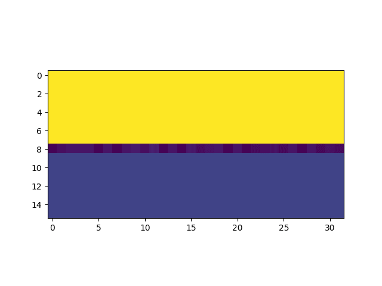
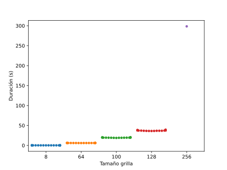

Interoperabilidad entre Python y Julia Lang
![]()
Demo de la Simulación

Duración en segundos de simulaciones de 100 pasos en grillas de distintos tamaños. Para cada tamaño de grilla se realizaron 20 simulaciones, excepto para la de tamaño 256 que se realizó una única simulación.
Utilizando un solver de sistemas lineales de Julia
Duración en segundos de simulaciones de 100 pasos en grillas de distintos tamaños. Para cada tamaño de grilla se realizaron 20 simulaciones, excepto para la de tamaño 256 que se realizó una única simulación.
¿Por qué necesito otro lenguaje de programación?
Important
Enfocandonos en el contexto de desarollo de Código para Cómputo Numérico y Científico
- Procesamiento de grandes volumenes de datos
- Resolución iterativa de algorítmos numéricos
Entonces surgen las preguntas
- ¿Estoy usando el algoritmo de resolución correcto?
- ¿Estoy usando las estructuras de datos correctas?
- ¿Estoy manejando los recursos de la computadora de manera eficiente? (Memoria, CPU, GPU …)
- ¿Cómo hago para responder las preguntas anteriores?
- ¿Tengo las herramientas adecuadas para responderlas?
Con una grilla de tamaño 64
4742152 function calls (4742143 primitive calls) in 6.555 seconds
Ordered by: cumulative time
List reduced from 196 to 20 due to restriction <20>
ncalls tottime percall cumtime percall filename:lineno(function)
2/1 0.000 0.000 6.554 6.554 {built-in method builtins.exec}
2/1 0.000 0.000 6.554 6.554 <string>:1(<module>)
1 0.000 0.000 6.554 6.554 <ipython-input-18-a8736b50808a>:1(simulacion)
100 0.000 0.000 6.554 0.066 experimento.py:30(paso)
100 0.001 0.000 6.554 0.066 simu.py:175(avanzar)
100 0.001 0.000 6.540 0.065 simu.py:160(calcular_concentracion)
56400 3.322 0.000 4.200 0.000 _basic.py:51(solve)
100 0.021 0.000 3.319 0.033 simu.py:110(calcular_concentracion_x)
18600 0.182 0.000 3.311 0.000 simu.py:122(calcular_columna)
100 0.037 0.000 3.204 0.032 simu.py:79(calcular_concentracion_y)
37800 0.323 0.000 3.166 0.000 simu.py:92(calcular_fila)
56400 0.595 0.000 1.191 0.000 simu.py:153(construir_matriz_tridiagonal)
112800 0.157 0.000 0.602 0.000 _util.py:275(_asarray_validated)
169200 0.273 0.000 0.474 0.000 _twodim_base_impl.py:247(diag)
112800 0.173 0.000 0.383 0.000 _function_base_impl.py:589(asarray_chkfinite)
56401 0.050 0.000 0.271 0.000 fromnumeric.py:2349(sum)
169201 0.267 0.000 0.267 0.000 {method 'reduce' of 'numpy.ufunc' objects}
56400 0.200 0.000 0.232 0.000 simu.py:145(construir_coef_)
56401 0.064 0.000 0.212 0.000 fromnumeric.py:69(_wrapreduction)
112800 0.042 0.000 0.195 0.000 {method 'all' of 'numpy.ndarray' objects}Con una grilla de tamaño 128
9580953 function calls (9580911 primitive calls) in 47.932 seconds
Ordered by: cumulative time
List reduced from 232 to 20 due to restriction <20>
ncalls tottime percall cumtime percall filename:lineno(function)
2/1 0.000 0.000 47.932 47.932 {built-in method builtins.exec}
2/1 0.001 0.000 47.932 47.932 <string>:1(<module>)
1 0.011 0.011 47.931 47.931 <ipython-input-18-a8736b50808a>:1(simulacion)
100 0.000 0.000 47.920 0.479 experimento.py:30(paso)
100 0.001 0.000 47.920 0.479 simu.py:175(avanzar)
100 0.003 0.000 47.874 0.479 simu.py:160(calcular_concentracion)
100 2.158 0.022 32.653 0.327 simu.py:110(calcular_concentracion_x)
37800 0.561 0.000 31.360 0.001 simu.py:122(calcular_columna)
114000 21.674 0.000 24.122 0.000 _basic.py:51(solve)
114000 8.781 0.000 18.364 0.000 simu.py:153(construir_matriz_tridiagonal)
100 0.126 0.001 14.230 0.142 simu.py:79(calcular_concentracion_y)
76200 0.825 0.000 14.135 0.000 simu.py:92(calcular_fila)
342000 6.021 0.000 9.261 0.000 _twodim_base_impl.py:247(diag)
570501 3.251 0.000 3.251 0.000 {built-in method numpy.zeros}
228000 0.402 0.000 1.793 0.000 _util.py:275(_asarray_validated)
228000 0.719 0.000 1.252 0.000 _function_base_impl.py:589(asarray_chkfinite)
11 0.068 0.006 0.973 0.088 base_events.py:1909(_run_once)
342001 0.811 0.000 0.811 0.000 {method 'reduce' of 'numpy.ufunc' objects}
114001 0.133 0.000 0.810 0.000 fromnumeric.py:2349(sum)
114001 0.162 0.000 0.655 0.000 fromnumeric.py:69(_wrapreduction)Interoperabilidad con Julia
¿Por qué Julia Lang?
Queremos un lenguaje que sea de
codigo abierto, con una licencia liberal.
Queremos la velocidad de
Ccon el dinamismo deRuby.
Queremos un lenguaje que sea
homoiconico,
Queremos un lenguaje que sea
homoicónico, con macros verdaderos comoLisp, pero con la familiar notacion matemática comoMatlab
Queremos que sea utilizable para programacion general como
Python, tan facil para la estadistica comoR, tan natural para procesamiento de texto comoPerl, tan poderoso para algebra lineal comoMatlab, tan bueno en unir programas como lashell.
Algo que sea muy simple para aprender, pero que deje feliz a los hackers más solemnes
Lo queremos interactivo y lo queremos compilado.


Mini demo de Julia
Llamar a Julia desde Python
Usamos el paquete juliacall
Paquetes
Para buscar paquetes pueden usar el buscador en JuliaHub, algo similar a pypi.org para Python
- Desarrollo interactivo: Revise, Pluto
- Desarrollo con GPU (JuliaGPU): CUDA
- Ecuaciones diferenciales: DifferentialEquations
- Machine Learning Científico (SciML): NeuralPDE
- Redes Neuronales: FluxML
- Diferenciación Automática (AD) (JuliaDiff): ForwardDiff, Zygote
- Procesamiento de Datos Estructurados: DataFrames,Makie
SCA314
Gracias!
Preguntas?
Los materiales de esta charla lo pueden encontrar en https://github.com/akielbowicz/pyday-catamarca-2024
Tip
Hay un par de diapos extras para que chusmeen
Más cosas para seguir aprendiendo
Cómo instalar Julia
La forma más práctica de instalar julia es usando el programa de la línea de comandos juliaup
En Linux:
En Windows:
Es necesario scoop:
En una consola de PowerShell instalamos scoop con:
> Set-ExecutionPolicy -ExecutionPolicy RemoteSigned -Scope CurrentUser
> Invoke-RestMethod -Uri https://get.scoop.sh | Invoke-ExpressionY una vez instalado, instalamos juliaup
Y para empezar a desarrollar, lo más práctico es usar VSCode con la extensión de Julia
Materiales para aprender Julia
La documentación oficial docs.julialang.org
La página de Nothworthy Differences with Other Languages que describe las diferencias con otros lenguages como Python, Matlab, R.
Hay un curso muy bueno del MIT sobre Parallel Computing and Scientific Machine Learning (SciML): Methods and Applications. Está super detallado y tiene las clases en YouTube.
El canal oficial de YouTube de @TheJuliaLanguage donde estan las charlas de las conferencias y meetups.
Características del lenguaje para seguir investigando
Introspección del Código
- Benchmarking
- Profiling
- Code inspection
Features de Desarrollo
- Multiple dispatch
- Metaprogramación
- Packaging y creación de Ambientes
Comunidades
- JuliaLang Argentina en Telegram
- JuliaLang en Zulip
- JupyterLatam en Telegram
- SciPy Argentina en Telegram
- Python Norte en Telegram
- Python Argentina en Telegram
🐍 PyDay Catamarca 2024